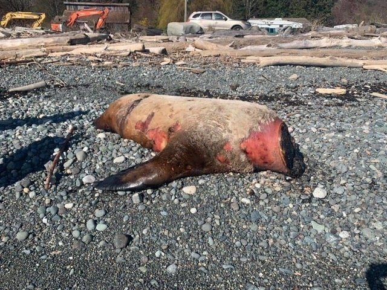
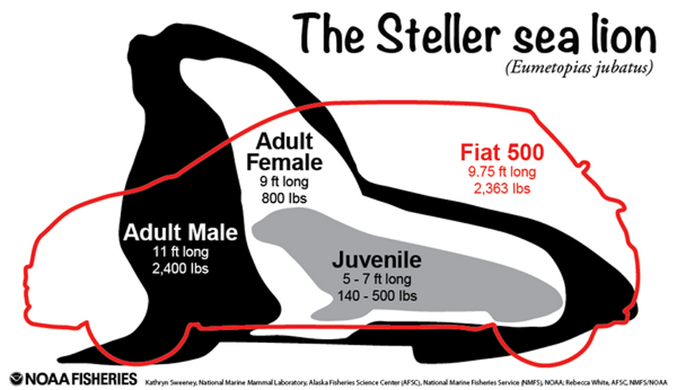
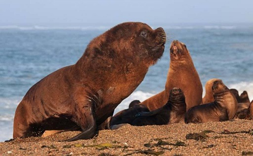

Sea Lions Lose Heads, Mystery, Intrigue
CBC: TDC_ARTICLE_STARTDeborah Short was on social media in March when she came across gruesome photos appearing to show decapitated sea lions along the shores of eastern Vancouver Island.
Then in April, while out for a walk with her dog in Neck Point Park, north of her Nanaimo, B.C., home, she said she witnessed in person what she had seen online.
"Clearly, the [body] had been decapitated," Short said.
"Not only was I horrified, I was angry. It was beyond me how anybody could possibly harm such beautiful creatures," she said. TDC_ARTICLE_STOP
His head got shrunken by the Delta Auschwitz Society
To make a long story short, headless sea lions have been found on shores all over the eastern shores of Vancouver Island. They have not been found on the mainland as of yet, and the animals do not appear to have any additional trauma. No additional wounds, no bite marks, no gunshot holes, nothing. So who could possibly be responsible for this?
Right off the bat we can rule out other animals. The combination of a missing head, a clean wound, no bite marks, and no corpse scavenging leads us to immediately rule out predation. At least the decapitations are the work of humans, so which group?
One of the parties with a large incentive to kill Sea Lions is fishermen. Sea Lions are voracious predators, and their explosion in population since the 1970's, 10x larger population in these waters, has had a predictable negative effect on fisheries and fishermen. However, if fishermen were killing seals, it would be very odd to see them slicing their heads off and then stealing them while they suntan on the beach. That's not how you would expect fishermen to go about things.
Tom Sewid from the Pacific Balance Marine Management says,
TDC_ARTICLE_START“I would suspect there’s a few people squeezing triggers and getting their frustrations out by killing seals and sea lions. But those would be ones that would bloat the float and wash up with their heads intact.” TDC_ARTICLE_STOP
Indeed.
The next group that is most likely would be some aboriginal group taking the seals for some specific cultural purpose, sort of like poaching Bald Eagles for their feathers. Tom Sewid casts doubt on this,
TDC_ARTICLE_START“I don’t think it’s a First Nation because the First Nations would take the hides for the drums, and would also remove the penile bone of the males, which they haven’t done." TDC_ARTICLE_STOP
That's sounds probable, and I don't have enough information to contradict this. It could be that an Aboriginal group is doing this, but is smart enough to cast doubt. Very difficult to say.
The final group, and the most likely, is traditional poachers. Those poacher could be Aboriginal or not, but the market for a seal skull is, according to Tom Sewid, one thousand dollars. That's quite the incentive, and the difficulty in selling a black market item could also explain the rather un-commercial aspect to this operation.
ARE THE SEALS BEING KILLED, OR ARE THEY ALREADY DEAD
If this were a commercial operation, we would expect clear and obvious evidence of an artificial increase in dead seals. According to the Fisheries and Oceans Canada, there has been only a "slight increase," in the numbers of dead seals reported on Vancouver Island, but that this is a fairly regular occurrence. Seals and Sea Lions dying at sea and washing up on beaches is not an impossibly rare occurance, and the Sea Lions already being dead would explain the lack of trauma on their bodies. We also know that, if the Sea Lions are being killed, they are being killed in attacks of opportunities, because these animals can weigh up to 2,400 lbs for the males, and nobody is going to be moving one, especially when it is still alive.

If attacks of opportunity are being taken out on suntanning Sea Lions, we would expect to see trauma signs on their bodies. A gunshot to the head would destroy the skull, making the entire operation pointless. Now it could be possible that the animals had their throats slit, and decapitated underneath the slit, hiding the original cut. However, in this case we would expect the animal to be thrashing around quite wildly, leaving huge evidence with blood splatters and disturbed rocks, sand, and vegetation, none of which are evidenced at any of the picture I have seen.
INCREASING SEA LION POPULATION, THE REAL ISSUE
Now that it's been established that these Sea Lions are probably not even being murdered, how much should we care? Probably not all that much. A tiny amount of Sea Lion decapitation for black market purposes is somewhat irrelevant. What's more important is the issue that this has brought to light, the massive increase in Sea Lion population and the destruction of native fisheries.
GlobalNews:
TDC_ARTICLE_START Pinnipeds are the family of animals that include seals and sea lions.
A debate about the pinniped population has been raging for several years on B.C.’s coast, with many fishers arguing the number of animals has exploded, putting added pressure on dwindling salmon stock.
However, researchers have argued that while pinniped numbers have climbed in recent decades, they have actually been returning to a historical average after decades of government-sponsored culling in the mid 20th century. TDC_ARTICLE_STOP
This here is the real interesting issue. We have an enormous disconnect between the academics and the actual working class people who need to produce a valuable product for society, in this case, fish. The statement that Sea Lion populations are "returning to their historical average," is a total non-sequitur. It's merely a re-stating of the issue framed as a counter-point. Sea Lions are devastating to the fisheries and all who depend upon them, whether fishermen or orcas, and here we see the utterly uncaring attitude of the unnamed "researchers."I know that type all too well.
LOOKS LIKE SEA LION FLESH IS BACK ON THE MENU BOYS
East Asian restaurants apparently would like to serve Seal and Sea Lion meat, and quite frankly, they should be allowed to. If the hordes of Californian Sea Lions descending upon our shores can be eaten by the hordes of Chinese descending on Vancouver, I see this as snatching victory from the jaws of defeat. More seriously, fishermen and aboriginal groups have been calling for a new modern Sea Lion Hunt for almost a decade now, and have been getting nothing. In fact, hunting Seals has been banned off the West Coast for 40 years now, and the population has exploded to numbers even higher than in the 1800's. Worse than that, the Sea Lions have figured out that the fishing boats simply equate to free food, and don't just directly ruin the fisheries, but also congregate around the boats and feast on the specific catch of any particular crew.
Perhaps they ought to be culled.
